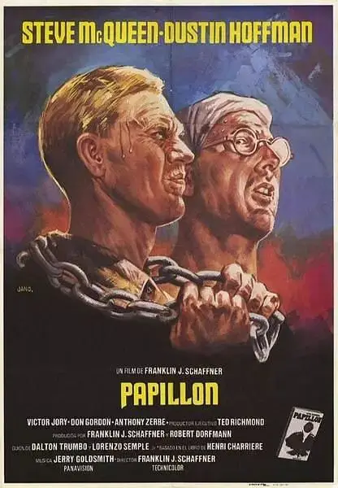

《巴比龙》比《肖生克的救赎》早了21年，曾被称为最好的越狱电影。
没有高智商的越狱情节，也不是燃烧着荷尔蒙、谁都挡不住的“超人”。
而是刻画了一个屡越屡败、坐穿牢底、用生命换取自由的斗士。
而这竟是真人真事，电影是根据当事人发表的同名畅销书改编而来，导演是执导过《人猿星球》和《巴顿将军》的富兰克林J.沙夫纳。
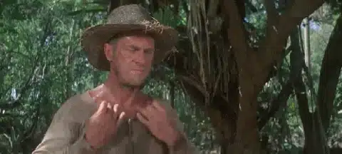
亨利·查理叶（史蒂夫·麦奎因饰）因其胸前有蝴蝶的纹身，故绰号为Papillon（蝴蝶的法文，音译为巴比龙）。
巴比龙被控杀害一名皮条客而被捕入狱，并被流放到一个名叫“恶魔岛”的苦役营终身服刑。
所谓的恶魔岛其实是南美洲“法属圭亚那”外海的一个小岛，距大陆11公里，面积34.6公顷。
自1852年起，该岛被法国建为流放重犯的监狱。
岛外四面环海，岛内到处是鳄鱼、毒蛇，小岛气候恶劣，疟疾横行，你就是逃出监狱的围墙，也难走出这可怕的岛屿。
一百年间，共有约8万犯人死于此处，恶魔岛因而得名。
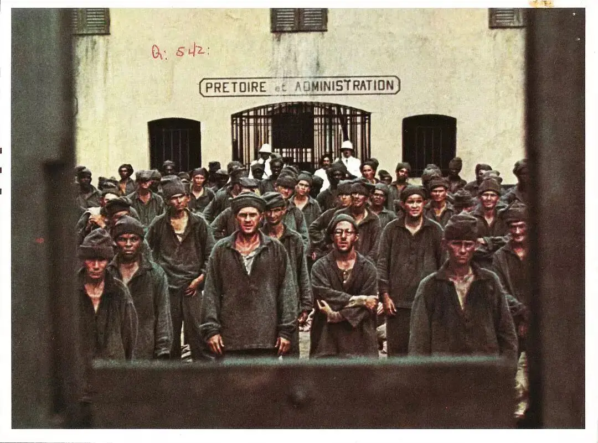
因为非人道的环境，恶魔岛一直被人诟病，直到1946年才被撤销。
因此这个故事是发生在1930年附近。
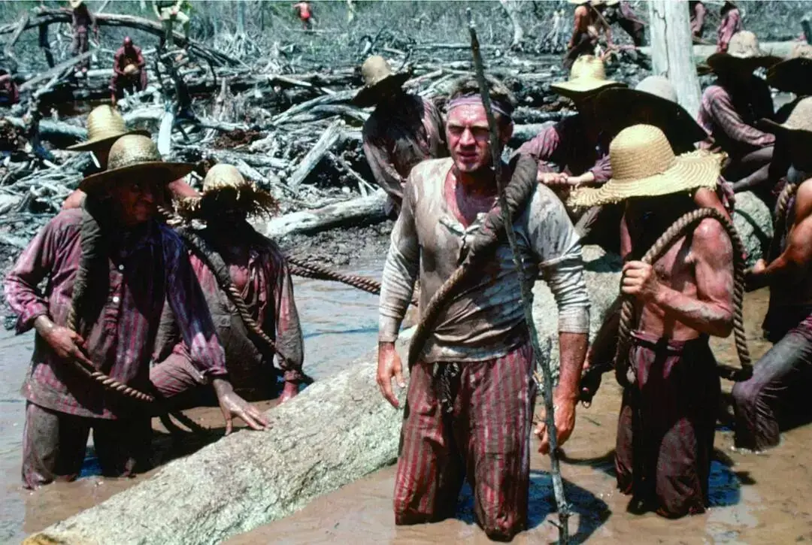
巴比龙在踏上恶魔岛之前，就无时无刻不想着越狱，因为他始终认为自己是被冤枉的。
巴比龙从不认为自己属于这里，即使有人用法律和国家的名义将他定罪，但那又何妨，只要自己的良心是自由的，就有足够的勇气和希望去冲出高墙。
为了逃狱，他盯上了一个戴着眼镜的聪明囚犯路易.德加，德加非常富有，却因为制造假钞和贿赂入狱，他坚信自己的妻子一定会想办法救自己出去。
巴比龙想要德加协助自己逃狱，作为回报，强壮有力的巴比龙为德加提供人身保护。
毕竟德加太过于出名，早已被很多人盯上。
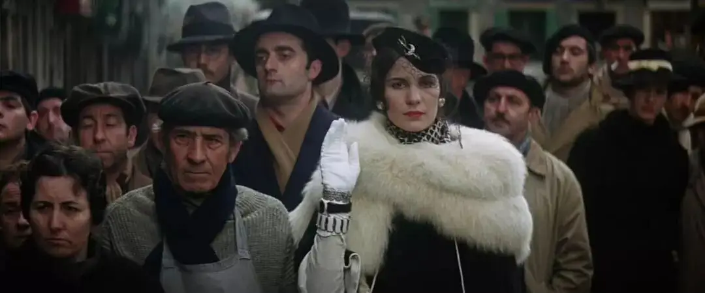
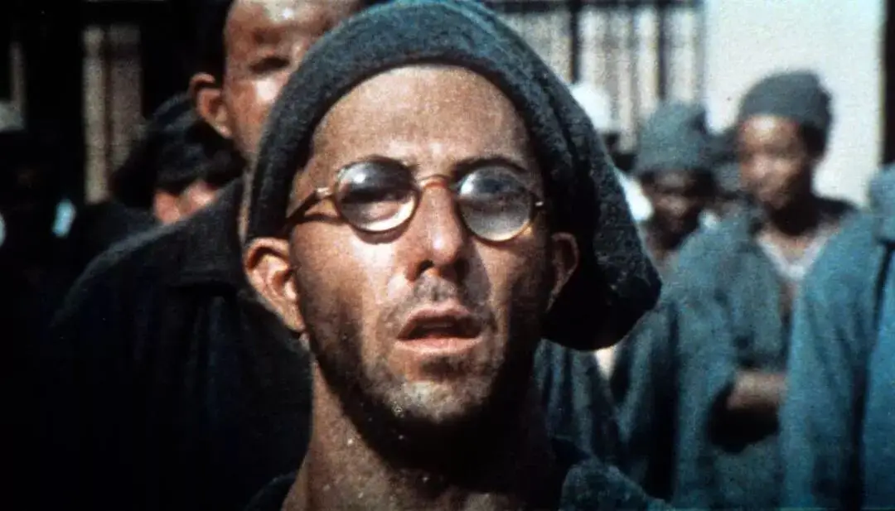
△奥斯卡影帝达斯汀·霍夫曼饰演路易.德加，他曾主演过《毕业生》、《午夜牛郎》、《克莱默夫妇》、《雨人》，这张剧照看起来有点像莱昂大叔。
巴比龙的逃跑计划简单粗暴，那就是搞点钱贿赂监狱工作人员，然后弄条船闯出恶魔岛。
第一次逃跑，德加帮他搞定了钱，他们想办法找了一个人，付了定金并约定了逃跑的时间，德加也决定和巴比龙一起逃出恶魔岛。
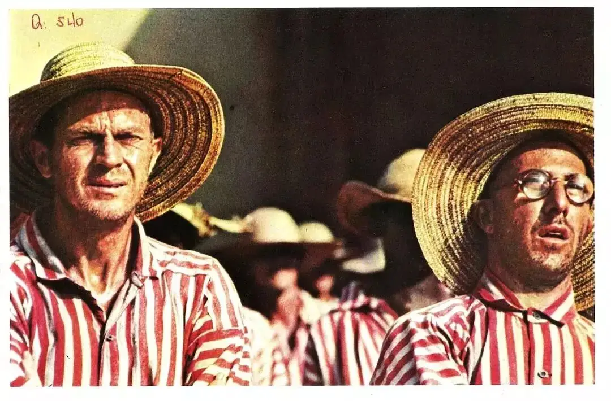
一切准备妥当，德加却被一个守卫虐待，巴比龙为了救德加打伤了守卫并逃入丛林。
当巴比龙准备乘船逃跑的时候，却被约好的人出卖，不仅没有得到船，还被埋伏抓捕。
巴比龙因此被单独关黑牢两年。
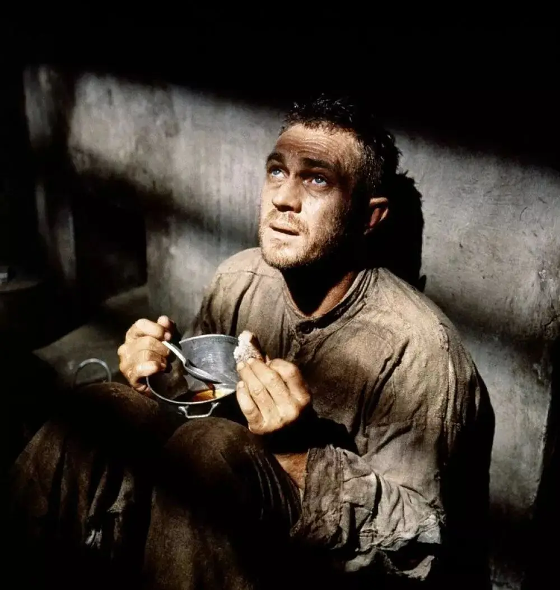
那里吃的东西极差，就是馊水里面飘着一点东西，巴比龙为了活下去，强忍着把这些畜生都不吃的东西喝下去。
不仅如此，监狱狭窄封闭极为压抑，无法想象在这个地方里单独蹲两年会变成什么样子。
不仅意志会被消磨，你甚至都不知道自己的身体状况到底如何。
每天早上，监狱的犯人们会从自己监狱门的小窗口中将头伸出来，有人会帮你刮刮胡子。
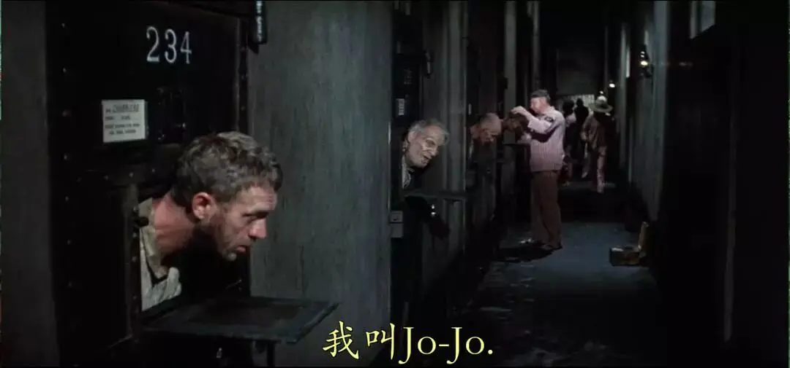
巴比龙的邻居乔治面色苍白，牙都掉完了，看上去非常虚弱，乔治问巴比龙，他看上去怎么样。
他迫切想从别人的口中得知自己的真实情况。
巴比龙为了安慰乔治，告诉他“你看上去很好”。
可是第二天，乔治的头却再也没有伸出来。
巴比龙在里面受尽精神和肉体上的折磨，德加为了报答巴比龙的救命之恩，想办法贿赂工作人员，在巴比龙的馊水中加入椰肉，并留下字条鼓励他坚持下去。
巴比龙深受感动，这更燃起了他继续坚持下去的勇气。
可是好景不长，很快监狱长发现了巴比龙的椰肉，他威逼巴比龙供出是谁在暗中帮助他。
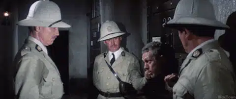
巴比龙没有出卖德加，为此，他的馊水被减半，监狱上面的铁窗被彻底关上，他饿着肚子在里面暗无天日地活了八个月。
为了活下去，巴比龙将抓到的蟑螂、蝎子丢在馊水了一起吃下去。
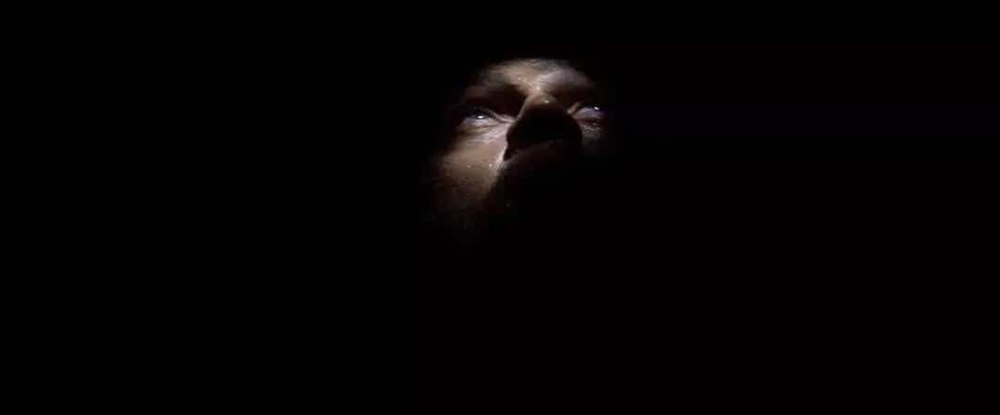
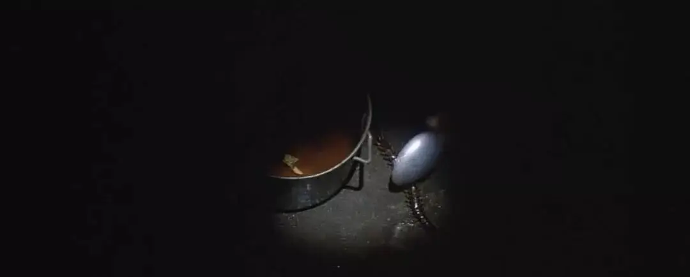
最恐怖的还是心灵的煎熬，在暗无天日的困顿中，在半梦半醒之间，巴比龙跌入到一个超现实梦境中。
这又是一场审判，红衣法官问巴比伦，你是否知罪。
巴比龙依旧拒不承认，说他没有杀皮条客，他没有犯罪，不应该被制裁。
红衣法官却严肃地告诉他：
你的确犯了罪，但是你真正的罪行和一个皮条客的死无关。
你所犯的是全人类最严重的罪——虚度人生。
你是否认罪！
巴比伦低下了头：“对，我犯了罪，我虚度了人生”，然后恍恍惚惚走向漫无天际的荒漠。
巴比龙被这场审判吓得睁大了眼睛，这像是一场来自上帝的审判。
这个场景很生动地表现出巴比龙内心的煎熬。
黑暗和饥饿拉长了时间，而没有自由、毫无意义的时间和空间让巴比龙的绝望看不到尽头。
而在外面的德加也非常焦躁，不是为了巴比龙，而是为了自己。
凭他的判断，巴比龙一定会出卖自己，毕竟谁都受不了里面的苦刑。
当一个人战胜了欲望的时候，就是他人格展现的时候。
巴比龙不住地看着德加留给自己的纸条提醒自己不要出卖朋友。
八个月后，在巴比龙虚弱不堪、意识模糊的情况下，他依旧没有出卖德加。
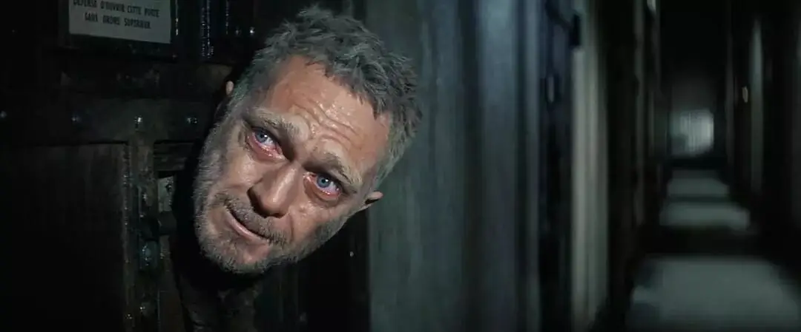
两年后，头发花白的巴比伦拖着虚弱不堪的身体离开了禁闭室，德加和他紧紧地拥抱在一起。
巴比龙赢得了德加真正的尊重。
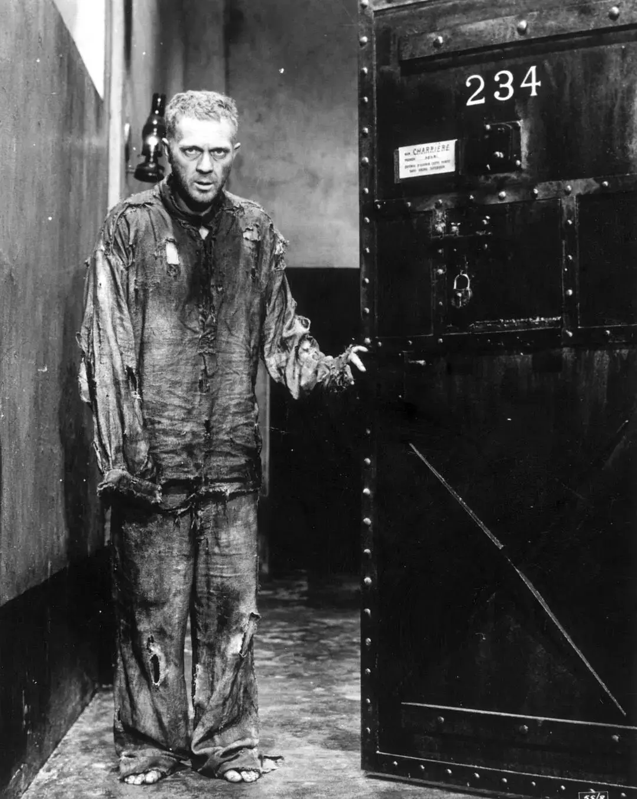
巴比龙并没有被击垮，身体恢复后，他立马开始了第二次的逃跑计划。
这一次，他们找了一个看上去很靠谱的印度人，为了不重蹈覆辙，巴比龙警告印度人，如果对方欺骗他，一定会找他报仇。
印度人信誓旦旦地告诉巴比龙，没有任何问题。
但又一次，巴比龙被骗了！
这次有船，不过是只破船，丛林中也依旧有人埋伏，所幸当地的土著帮助了巴比龙。
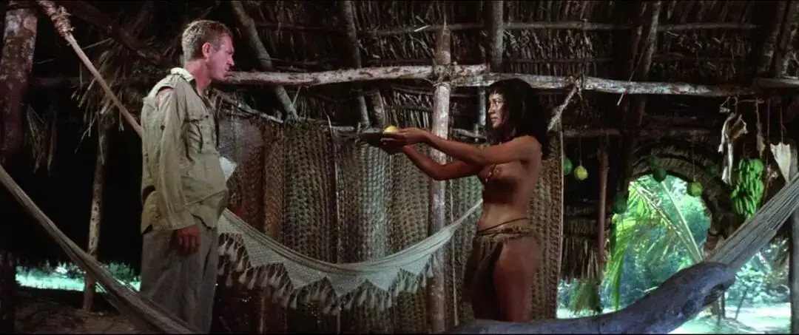
他闯过惊涛骇浪的海洋，躲过追捕和埋伏，眼看着要成功的时候，却被一个修女骗了。
不同于肖申克监狱里的希望、自由和古典音乐的美好，恶魔岛里面都是暴力、苦役、贿赂、出卖、诈骗等罪恶。
电影辛辣地嘲讽了文明世界的虚伪和败坏，科技的突破、经济的发展、知识的增多并不代表着人类道德的进步，反而有可能让人变得更加贪婪、凶狠。
就是巴比龙和德加起初也只是相互利用，德加对巴比龙也是充满了猜忌和不信任。
所谓的进步主义有可能是人类最大的谎言，电影中最擅长欺骗的都是穿着“华丽外衣”的文明人，而对巴比龙施以援手的却是丑陋不堪、衣不蔽体的麻风病人和原始土著。
现代人精致的虚伪和利己在这些人面前显露无疑。
就是信仰也极有可能因为人类的罪恶而变味，电影中有两个有趣的对比，一个麻风病人和一个修女。
麻风病人在当地很有势力，掌握着很多船只和资源，令人不忍直视的外表却让他们成为了别人眼中的异类。
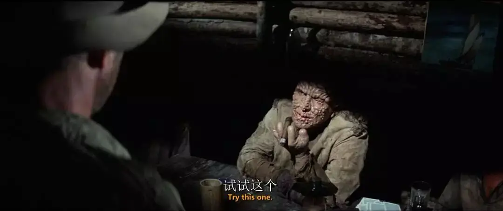
当巴比龙求助于麻风病人的时候，麻风病人要巴比龙尝尝他抽过的雪茄。
巴比龙怀着忐忑的心抽了雪茄，麻风病人好奇地问“你怎么知道我得的是不会传染的干性麻风病”
巴比龙告诉他，他并不知道。
这让麻风病人非常震惊和感动，曾有很多人因为偏见拒绝过那根雪茄，而巴比龙却敢于“拥抱”麻风病人。
麻风病人不仅送给巴比龙船只，还送给他们很多钱。
可怕的外表也只是外表，这些麻风病人的内心却是很善良的。
而电影中的修女没有效法耶稣，不是像特蕾莎修女一样用信仰去拥抱丑陋，反而陷入到贪婪和伪善之中。
修女收了巴比龙的珍珠却告发了巴比龙。
当巴比龙在修道院被带走的时候，修女给了巴比龙一个“完美”的回复：
“如果你有罪，你捐的珍珠足以替你赎罪，如果你没有罪，那也没什么好怕的，上帝会看顾你”
这是对我们的提醒，如果神学和教义成为我们伪善的说辞，那是相当可悲的。
这次被捕，巴比龙又坐了5年的黑牢。
再一次出来后，巴比龙已经是佝偻着背的白发老人。
他被丢在恶魔岛的偏远处自生自灭。
那里都是一些老弱病残的犯人，他们自己喂猪、种菜，要在这里走完自己最后的人生。
巴比龙在这里碰到了德加，可是德加却在躲着他，德加躲闪的眼神里藏着过去失败的苦楚和如今得过且过的无奈。
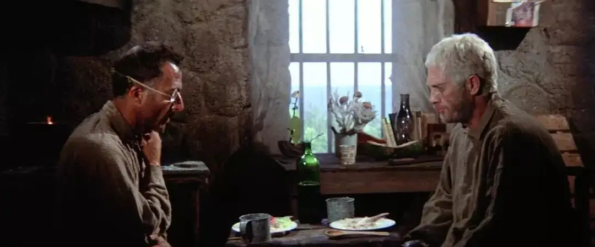
德加不想看到曾经给自己希望的巴比龙变成这个样子，这会让过去的美好记忆荡然无存。
德加也不想从巴比龙口中再听到任何关于“逃狱”和“自由”这样的词，这仿佛像针扎一样提醒自己在虚度人生，可现实明明却是那样的无力。
年轻的时候还可以跑一跑，现在走快点都很困难。
白发苍苍的巴比龙站在悬崖边看着一望无际的大海，这个场景真的很绝望。
两个半小时的电影也马上要接近尾声，就连观众都累了。
就这样吧，这里的风景也还不错，喂猪种菜倒也自在，为什么不在这里呢。
闯出去又如何，外面一样罪恶，毕竟，巴比龙被人冤枉，德加也始终没有等到他的妻子。
令所有人都没有想到的是，巴比龙没有放弃！
他从高高的悬崖上观察到一个小海湾，在那里他发现海浪足够强大，可以将一个人带到大海和附近的大陆。
他兴奋地告诉德加，这次一定能够成功。
他们将椰子装在麻袋里，然后用绳子扎紧，想要靠它漂出大海。
巴比龙从悬崖上一跃而下，德加却没有勇气跟着老朋友再次冒险。
看着巴比龙劈风斩浪抓住漂浮物，看着惊涛骇浪将他成功推向大海。
德加感动、羡慕、祝福，却始终不敢一跃而下，朋友渐渐远去，德加失魂落魄转身离开。
伴随着戈德史密斯感人至深的音乐，永不屈服的巴比龙飘在蓝色海洋上。
他终于获得了自由，在他生命的最后几年里过着自由人的生活。
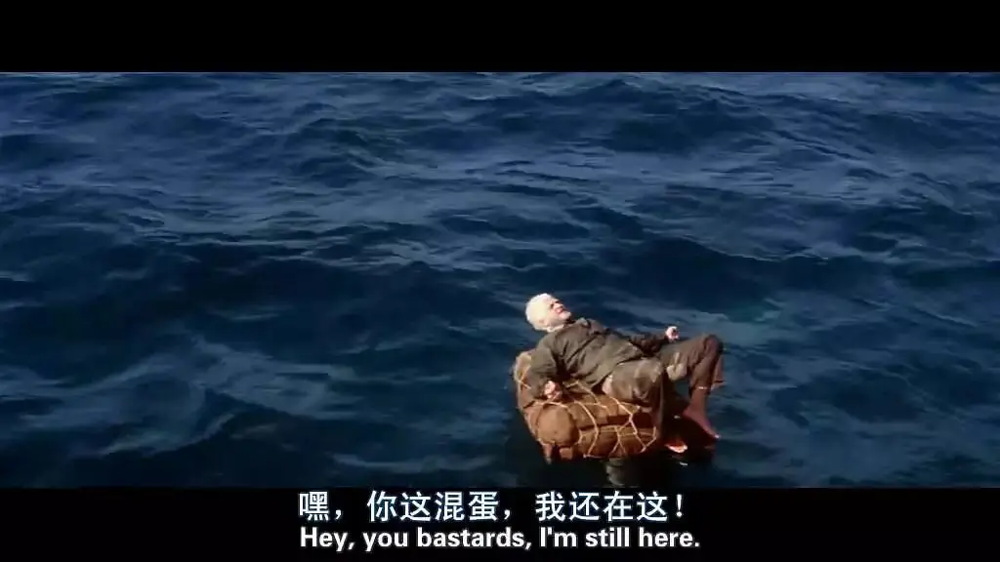
150分钟的电影，148分钟处于困顿、失败和绝望之中，最后两分钟的一跃而下和荡身大海让人热泪盈眶。
这部电影的观感不同于《肖申克的救赎》，《肖》的故事情节比较紧凑、充满悬念，视听语言也比较明快。
《巴比龙》则更像是一场马拉松，是知道目的的奔跑，过程没有太多悬念，你只能忍受着煎熬勇往直前，直到终点处，才会感受到巨大的震撼和感动。
巴比龙很像《老人与海》里倔强执拗的老人，没有卑躬屈膝，没有被高墙遮蔽希望。
自由就像光一样让被困的灵魂蠢蠢欲动，巴比龙在最黑暗的时刻仍然记得太阳的样子。
为此，他像疯子一样撞的头破血流，像飞蛾一样扑下大火，他也终于重见天日，像蝴蝶一样自由地飞翔。
倘若自由尚能让一个人如此勇敢和契而不舍，那上帝的爱怎么不会让我们拥有面对一切的力量和勇气！

为巴比龙点的歌
《无名》
以往夜里，似太遥远当天的心情谁领会看似得到却太遥远始终孤独踏我路我毫不理会，纵使受挫也不心酸和气馁跌过痛过，现已不再追究
这里没有挑逗你眼目情欲的小鲜肉
也没有挑动你肉体情欲的段子
更没有膨胀你今生骄傲的鸡血
我们只在乎那些最质朴真诚的作品
在那里我们才能恢复真正的想象力
我们也坚信这才是我们真正需要的

ID:Six_hundred_hits
长按二维码，一键关注
【六百击】
-END-
电影评论
尽情分享朋友圈

苹果打赏通道
小提示：文末广告是腾讯配送广告，内容与本号无关，但您的每次点击（无需反复点）都会给平台带来几毛收益，欢迎您点击支持六百击。